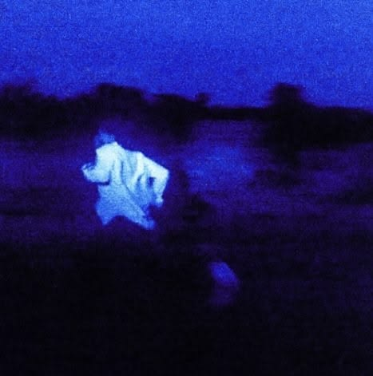

Rank 1

ALWAYS
Daniel Caesar
"Always" by Daniel Caesar is a soulful R&B ballad about unconditional devotion and the persistence of love, even after a relationship has ended.
Rank 2
.jpg)
LIFETIME
Ben and Ben
"The song explores the idea that even when a relationship ends or people are physically separated, the love they once shared remains a permanent part of their history."
Rank 3

WHO KNOWS
Daniel Caesar
"It is a song for anyone who has ever felt like they were half-here and half-running—longing for connection while instinctively bracing for the possibility of disappointment."
Rank 4

LEAVES
Ben and Ben
"It is a gentle, comforting reminder that if you truly love someone, you should choose healing over holding onto a grudge."
Rank 5

Talking to the Moon
Bruno Mars
"It's about a man who pretends he's doing okay around others, but in private, he can't stop wondering if the other person feels the same way."
Rank 6

About You
The 1975
"It is about how certain people become so tied to your identity that you can't stop thinking about them, even if time has passed."
Rank 7

The Only Exception
Paramore
"It is a soft, honest confession that even though she was afraid to trust, she is willing to take a risk for the right person."
Rank 8

Through the Years
Kenny Rogers
"It is a tribute to commitment, showing that real love is not just about the beginning, but about staying together through all of life's stages."
Rank 9
.jpg)
Yellow
Coldplay
"It is a simple, powerful declaration of love—telling someone they are the most important thing in your world."
Rank 10

The Other Side
Conan Gray
"It is about the quiet, lonely moments after a breakup when the realization hits that things will never be the same again."